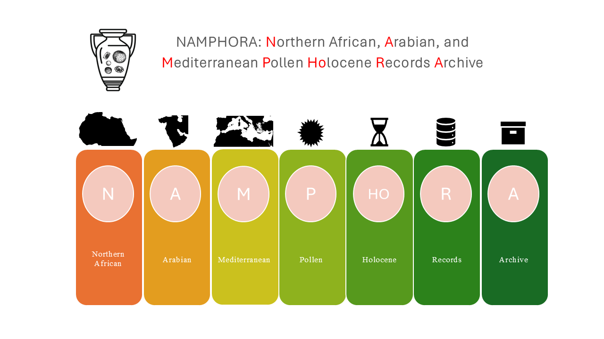
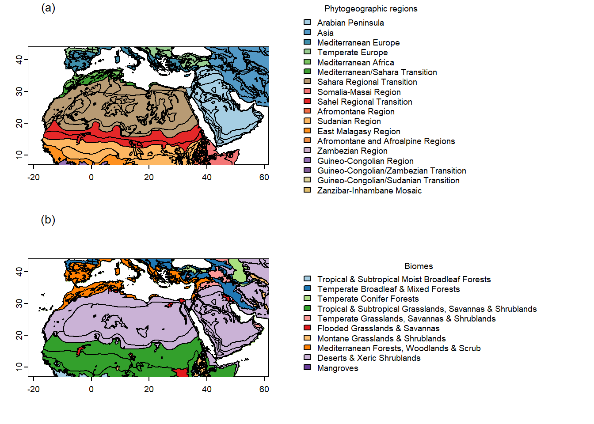
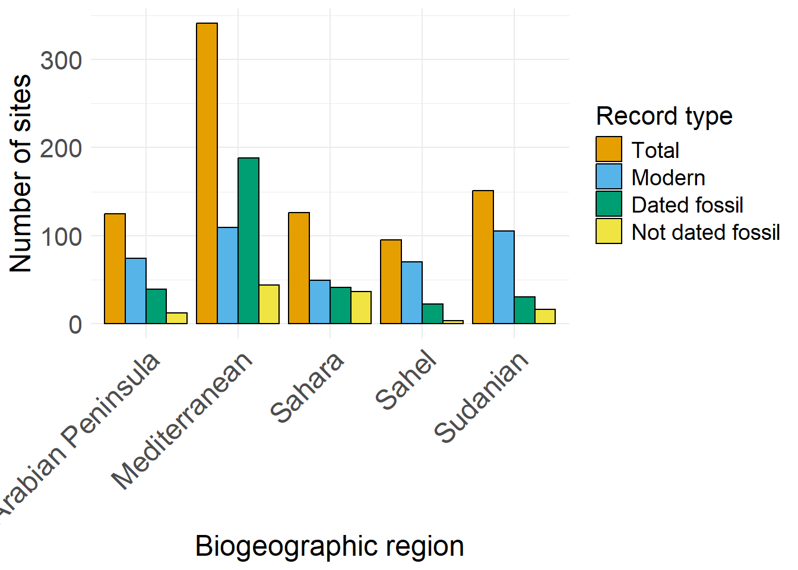
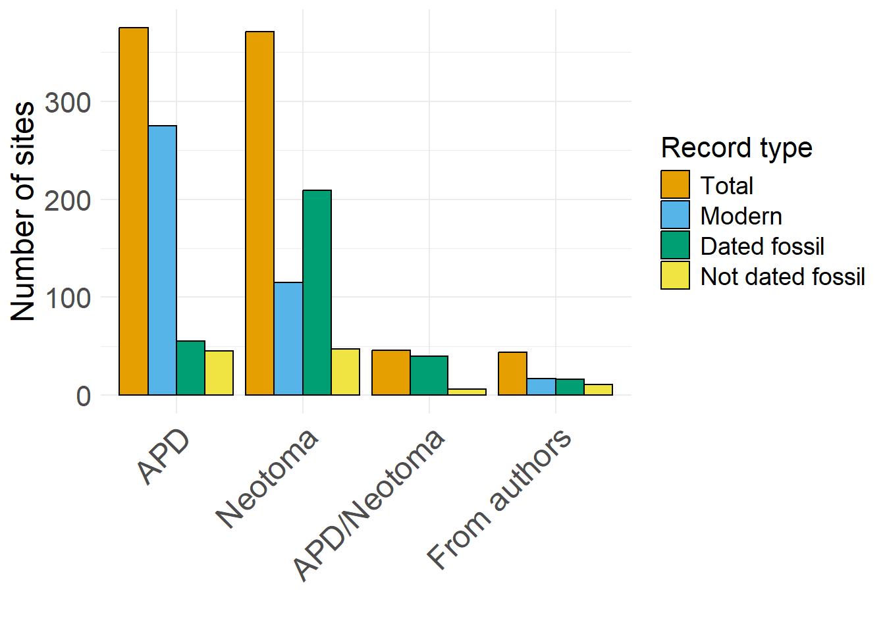
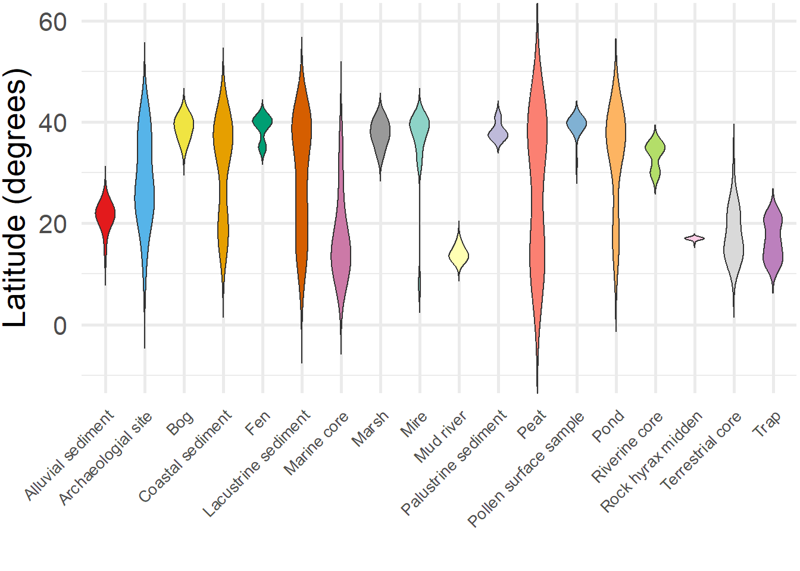
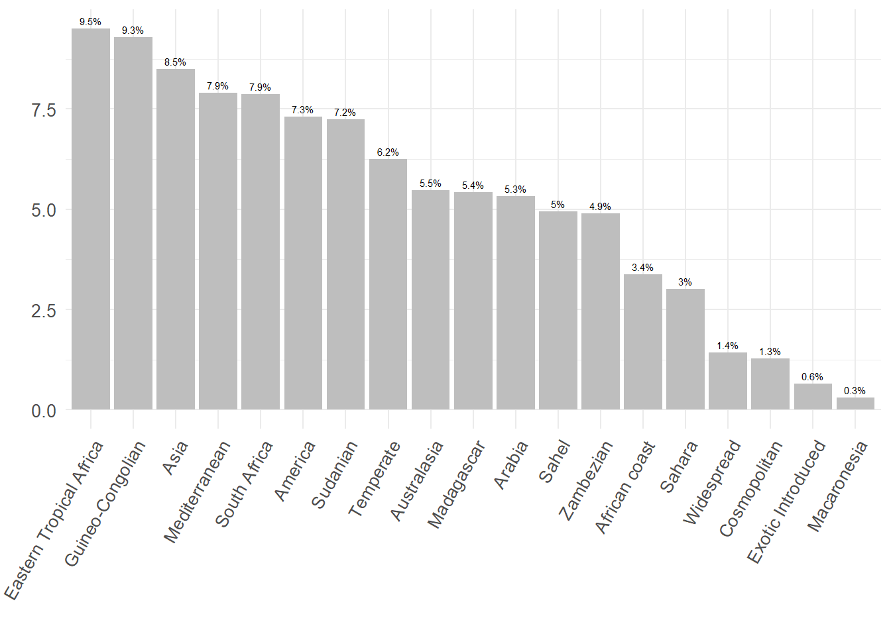

![]()
Figure 1. Map of pollen records (modern & dated and non-dated fossil records) compiled in the NAAMPHoRA database
NaAMPHoRA: An Open-access Database of Fossil and Modern Pollen Records from the Mediterranean, Arabian and North African regions
Abstract
North Africa’s climate and vegetation have undergone major shifts during the Holocene, particularly during the African Humid Period. Fossil pollen records are crucial for reconstructing past vegetation and climate, offering insights into the origin and distribution of past flora. However, existing pollen databases, especially concerning North Africa, have several limitations, including the unavailability of some unpublished data and the absence of standardised information on plant traits. To address these issues, we introduce the North African, Arabian, and Mediterranean Pollen Holocene Records Archive (NaAMPHoRA)—a comprehensive, machine-readable database compiling fossil and modern pollen records alongside plant functional traits, phytogeographical data, and taxonomic harmonisation. This database will significantly improve the accuracy of palaeoecological reconstructions, enhance biogeographical analyses, and refine climate models for North Africa during the Holocene. It enables direct data retrieval via programming languages such as R, and all datasets and code are openly available via GitHub, with contributions and feedback welcomed.
Keywords
Pollen records, Plant functional traits, Palaeoecology, Holocene, African Humid Period (AHP), Open-access database, NaAMPHoRA database
1 Table of Contents
-
3.1. Project set up
3.2. Data Preparation
3.3. Data Visualisation
3.4. Metadata
3.5. Functions
2 Introduction

The NaAMPHoRA (Northern Africa, Arabian, and Mediterranean Pollen Holocene Records Archive) is an open-access database that compiles fossil and modern pollen records from North Africa, Arabia, and the Mediterranean. The database includes fossil and modern pollen records, as well as uncalibrated and calibrated radiocarbon dates (in calendar years). The database also provides information on growth form (habit), phytogeographic affinity, and plant functional traits (PFTs) for each taxon in the database.
Pollen records and radiocarbon dates were sourced from Neotoma (https://www.neotomadb.org/) and African Pollen Database (APD: https://africanpollendatabase.ipsl.fr/#/home), and unpublished data were obtained directly from the authors. Growth form and phytogeographic affinity data for each harmonised pollen type were compiled using the Global Biodiversity Information Facility (GBIF: https://www.gbif.org/), the Plants of the World Online (POWO: https://powo.science.kew.org/) website, and relevant literature, while plant functional traits were retrieved from the Botanical Information and Ecology Network (BIEN: https://bien.nceas.ucsb.edu/bien/ ) and TRY Plant Trait Database (TRY: https://www.try-db.org/TryWeb/Home.php) databases.
3 Project structure
Different sections (folders) of the project are structured as follows:
data/: All raw and processed data are stored in this folder./raw_data: Contains raw data on the following sub-folders:/age_data: Contains information on radiocarbon dates and their calibration for each dated pollen record./calibration: Contains calibration data for each dated fossil pollen record. If more than two radiocarbon dates are available, calibration is performed using a Bayesian age-depth model with the rbacon R package (Bacon_runsfolder). If only a single date is reported, calibration is performed using the rice R package (Single_depth_calibrationfolder)./radiocarbon: Contains the raw radiocarbon dates for each dated fossil pollen record. Obtained from the APD (https://africanpollendatabase.ipsl.fr/#/home), from Neotoma (https://www.neotomadb.org/), from Giesecke et al. (2014), and directly from the authors.
/mapping_data: Contains the following:/EcoregionsWWF_2017: Includes the WWF terrestrial ecoregions of the world shapefile (retrieved from https://www.worldwildlife.org/publications/terrestrial-ecoregions-of-the-world)./
Regions_WWF_2017: Includes a shapefile with the regions for Europe and the Arabian Peninsula modified from the WWF terrestrial ecoregions of the world shapefile in QGIS v. 3.28.1 - Firenze./Africa_Vegetation_White_1983: Containes the phytoregions shapefile, which were defined by White (1983) (retrieved from https://www.miramon.cat/mmr/examples/miombo/docs/database/white/index.htm)The elevation raster file (elevation.tiff) obtained from Lazagabaster et al. (2024).
/plant_functional_types: Contains the/TRYfolder, which includes plant functional trait data (i.e. leaf type trait) downloaded from the TRY database. Specifically, it contains a list of original taxa present in the TRY database (TryAccSpecies.csv), a list of taxa selected for download (Try_list_download.csv) and the trait information retrieved from the database for the selected taxa (leaf_type_TRY.xlsx)./pollen_data: Contains raw fossil (/fossilfolder) and modern (/modernfolder) pollen records, obtained from the APD (https://africanpollendatabase.ipsl.fr/#/home), from Neotoma (https://www.neotomadb.org/) using the neotoma2 package and the Neotoma API, and from the authors directly./taxonomy: Contains the following sub-folders:harmonisation_lists: Includes taxonomic harmonisation resources, including harmonisation tables from Lézine et al. (2009), Mottl et al. (2021), the APD taxonomy list (https://africanpollendatabase.ipsl.fr/#/taxon-dict), and the pollen inventory from Vincens et al. (2007), which includes information on habit, habitat and photographic affinity of pollen types from the APD.raw_taxa_list: Contains the raw_pollen_types.csv file, which lists the raw pollen types from all pollen records compiled in the NaAMPHoRA database.
/processed_data:Contains processed data on the following sub-folders:/age_calibrated: Contains recalibrated radiocarbon dates for each dated pollen record./plant_functional_types: Contains the final plant functional traits data in the file total_pfts.csv./pollen_data: Contains harmonised fossil (/fossilfolder) and modern (/modernfolder) pollen records. Each folder includes:/harmonised_counts: Harmonised pollen records with original counts./harmonised_percentages: Harmonised pollen records with calculated percentages.
/taxonomy: Contains the following:The harmonised_taxonomy_list.csv file, which contains a list of the original taxa and their corresponding harmonised names.
The phytogeographic_affinity.csv file, which contains a list of the phytogeographic affinities for each harmonised pollen type.
docs//references: Contains the following:/pollen_records_references: includes the references of the pollen records in .bib format./pfts_references: includes the references of each trait retrieved from BIEN database in .bib format./taxonomy_references: includes the references used for pollen taxonomy harmonisation in .bib format.
/supplementary_info: Includes additional resources, organised into:/original_excel_files_received_from_authors: Stores the original files provided by the authors./graphs: Contains graphs not included in the manuscript.
images/: Contains the PNG files of the database workflow and the database logo.index_files/: The files created when rendered this html document.metadata//age_calibrated: Contains the following:calibration_information.csv: A file that provides details on the calibration process for each record.
calibration_metadata.csv: A file that contains metadata for the calibration_information.csv file.
calibration_metadata.html: An html file that contains metadata for the calibration_information.csv file.
/calibration_metadata_files: The files created when rendered the scriptcalibration_metadata.qmd.
/plant_functional_types: Contains the following:pfts_categories.csv: A file that provides a definition for each plant functional trait and the corresponding reference.
pfts_metadata.csv: A file that contains metadata for the total_pfts.csv file.
pfts_metadata.html: An html file that contains metadata for the total_pfts.csv file.
/pfts_metadata_html_files: The files created when rendered the scriptpfts_metadata.qmd.
/pollen_data: Contains the following:database.csv: A file that contains the metadata information for all the pollen records compiled in the NaAMPHoRA database.
pollen_metadata.csv: This file provides details descriptions of each column in the database.csv file.
database.html: An html file that contains metadata for the database.csv file.
/pollen_metadata_files: The files created when rendered the scriptpollen_metadata.qmd.
/references: Contains the database_references.csv file, which lists references for each dataset (i.e. pollen records/age data, taxonomy, habit, and phytogeographic affinity)./taxonomy: Contains the following:taxonomy_metadata.csv: A file that provides an explanation for each column of the harmonised_taxonomy_list.csv file.
taxonomy_metadata.html: An html file that contains metadata for the harmonised_taxonomy_list.csv file.
/taxonomy_metadata_files: The files created when rendered the scripttaxonomy_metadata.qmd.phytogeographic_affinity_categories.csv: A file that provides a definition for each phytogeographic affinity category and the corresponding reference.
habit_categories.csv: A file that provides a definition for each plant habit (growth form) and the corresponding reference.
outputs/: This folder contains all the outputs of the data visualisation in the form of maps (outputs/maps/) & graphs (outputs/graphs/).scripts/: This folder contains all scripts of the data pipeline. It also includes the following sub-folder:/renv: Stores all installed R packages along with a record of their versions.
4 Data pipeline
Data extraction, processing, and visualisation are conducted in R v. 4.4.1., following this data pipeline:

Run the scripts in the following order:
4.1 Dependencies set up
setup.R (Run this script to install dependencies)
4.2 Data Preparation
01_pollen_list.R (Extracts pollen records from Neotoma using the neotoma2 v1.0.5 R package and generates a raw pollen list for taxonomic harmonisation)
02_harmonisation_lists.R (Adds the number of pollen sequences per pollen type and incorporates published harmonisation lists into the harmonised taxonomy list)
03_processing_pollen_data.R (Processes raw pollen data, including taxonomic harmonisation, radiocarbon date re-calibration, and percentage calculations)
04_process_PFTs.R (Downloads and processes plant functional traits (PFTs) from the BIEN and TRY databases)
05_calibrate_14C_bacon.R (Calibrates radiocarbon dates using Bayesian age-depth modelling with the rbacon v3.2.0 R package)
06_calibrate_14C_single_depth.R (Calibrates radiocarbon dates for single-depth samples using the rice v1.0.0 R package)
07_altitude_sites.R (Assigns altitude values to sites lacking altitude information)
4.3 Data Visualisation
08_maps.R (Creates maps of all fossil and modern pollen records compiled in this database)

09_description_database_figures.R (Creates graphs to summarise and describe the database)





4.4 Metadata
pollen_metadata.qmd (Generates a csv and HTML files containing pollen metadata for the database.csv file)
taxonomy_metadata.qmd (Generates a csv and HTML files containing metadata for the harmonised_taxonomy_list.csv file)
pfts_metadata.qmd (Generates a csv and HTML files containing metadata for the total_pfts.csv file)
calibration_metadata.qmd (Generates a csv and HTML files containing metadata for the calibration_information.csv file)
4.5 Functions
functions.R (Contains custom functions used throughout the data pipeline)
5 References
- Giesecke, T., et al. Towards mapping the late Quaternary vegetation change of Europe. Vegetation History and Archaeobotany, 23, 75–86. (2014).
- Lazagabaster, I. A., et al. Evaluating species distribution model predictions through time against paleozoological records. Ecology and Evolution, 14, e70288. (2024).
- Lézine, A. M., Watrin, J., Vincens, A., & Hély, C. Are modern pollen data representative of West African vegetation? Review of Palaeobotany and Palynology, 156, 265–276. (2009).
- Mott, O., et al. Global acceleration in rates of vegetation change over the past 18,000 years. Science, 372, 860–864. (2021).
- Vincens, A., Lézine, A. M., Buchet, G., Lewden, D., & Le Thomas, A. African pollen database inventory of tree and shrub pollen types. Review of Palaeobotany and Palynology, 145, 135–141. (2007).
- White, F. The Vegetation of Africa: A Descriptive Memoir to Accompany the Unesco/AETFAT/UNSO Vegetation Map of Africa. (Unesco, Paris, 1983).
Reuse
Citation
BibTeX citation:
@online{solano,
author = {Solano, Irene and Bro-Jorgensen, Jakob and A. Lazagabaster,
Ignacio and D. Thomas, Chris and Manzano, Saúl},
title = {NaAMPHoRA: {An} {Open-access} {Database} of {Fossil} and
{Modern} {Pollen} {Records} from the {Mediterranean,} {Arabian} and
{North} {African} Regions},
volume = {NA},
number = {NA},
doi = {NA},
langid = {en},
abstract = {North Africa’s climate and vegetation have undergone major
shifts during the Holocene, particularly during the African Humid
Period. Fossil pollen records are crucial for reconstructing past
vegetation and climate, offering insights into the origin and
distribution of past flora. However, existing pollen databases,
especially concerning North Africa, have several limitations,
including the unavailability of some unpublished data and the
absence of standardised information on plant traits. To address
these issues, we introduce the North African, Arabian, and
Mediterranean Pollen Holocene Records Archive (NaAMPHoRA)—a
comprehensive, machine-readable database compiling fossil and modern
pollen records alongside plant functional traits, phytogeographical
data, and taxonomic harmonisation. This database will significantly
improve the accuracy of palaeoecological reconstructions, enhance
biogeographical analyses, and refine climate models for North Africa
during the Holocene. It enables direct data retrieval via
programming languages such as R, and all datasets and code are
openly available via GitHub, with contributions and feedback
welcomed.}
}
For attribution, please cite this work as:
Solano, Irene, Jakob Bro-Jorgensen, Ignacio A. Lazagabaster, Chris D.
Thomas, and Saúl Manzano. n.d. “NaAMPHoRA: An Open-Access Database
of Fossil and Modern Pollen Records from the Mediterranean, Arabian and
North African Regions.” Scientific Data. https://doi.org/NA.